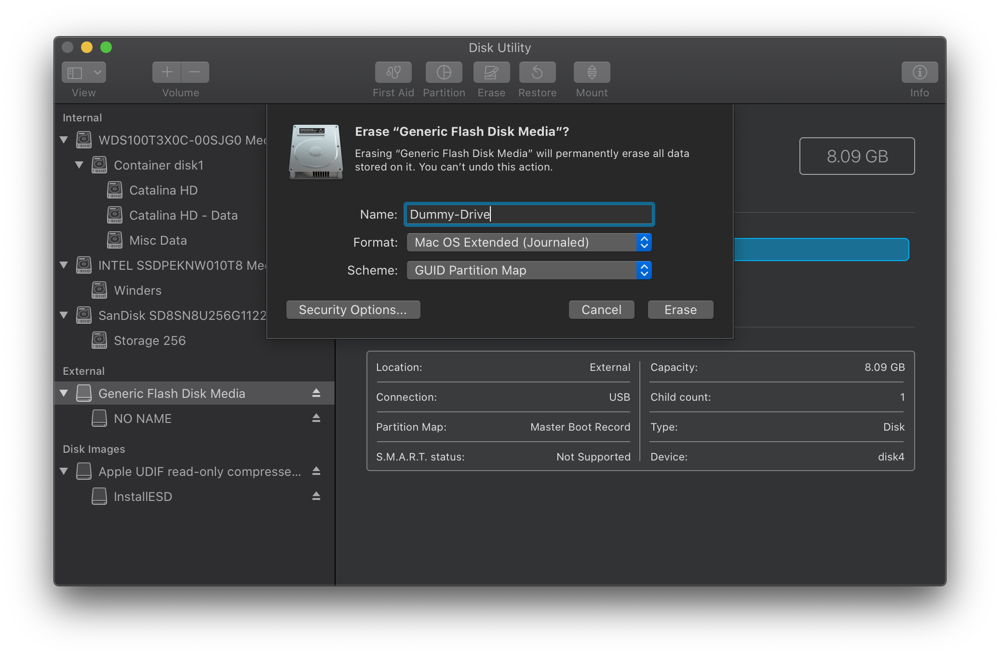
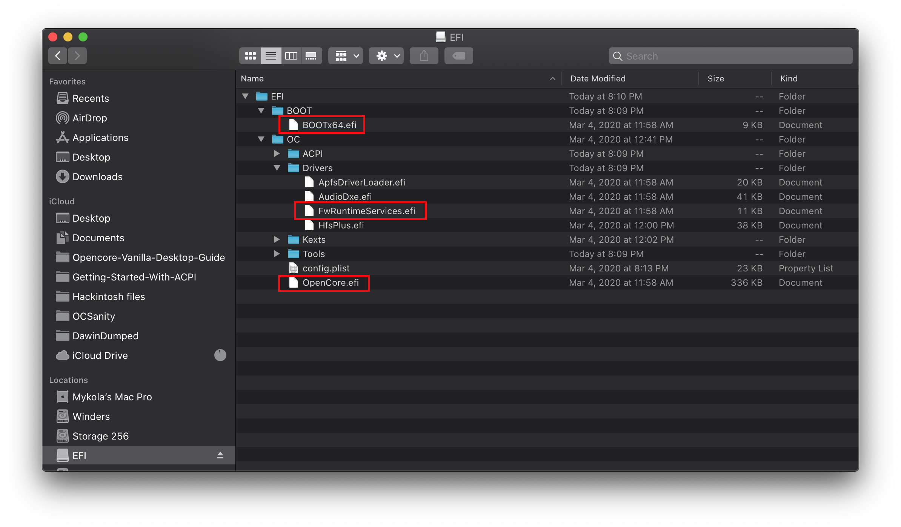
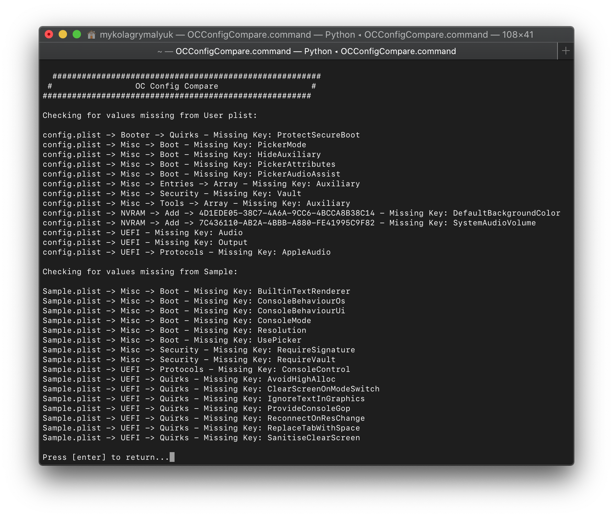

Last modified: Sat Apr 18 2020 19:59:11 GMT+0000 (Coordinated Universal Time)
Updating OpenCore and macOS
- Supported version: 0.5.7
Table of Contents:
Updating OpenCore
So the main things to note with updating OpenCore:
- Releases happen the first monday of every month
- The Differences.pdf will tell you all the things added and removed from this version of OpenCore compared to the previous release
- The OpenCore Vanilla Guide will have a note on the README.md about what release version it supports
So how do I update?
So the process goes as follows:
Download the latest releases of OpenCore and co.
Mount your EFI
So first, lets mount your hard drive's EFI and make a copy somewhere safe with MountEFI. We won't be updating the drive's EFI at first, instead we'll be grabbing a spare USB to be our crash dummy. This allows us to keep a working copy of Opencore incase our update goes south
For the USB, it must be formatted as GUID. Reason for this is that GUID will automatically create an EFI partition, though this will be hidden by default so you'll need to mount it with MountEFI.

- Now you can place your OpenCore EFI on the USB

Replace the OpenCore files with the ones you just downloaded
The important ones to update:
EFI/BOOT/BOOTx64.efiEFI/OC/OpenCore.efiEFI/OC/Drivers/OpenRuntime(Don't forget this one, OpenCore will not boot with mismatched versions)
You can also update other drivers you have if present, these are just the ones that must be updated in order to boot correctly

Compare your config.plist to that of the new Sample.plist
With this, there's a couple ways to do this:
- OCConfigCompare to compare between the sample.plist and your config.plist
diff (file input 1) (file input 2)in terminal- BeyondCompare
- Make a new config based off reading the updated Opencore Vanilla Guide
Once you've made the adjustments and made sure you config is compliant with the newest release of OpenCore, make sure to double check your setting with the OpenCore Guide on what to set everything to, otherwise read the Differences.pdf if you want to get a bit more technical.

Boot!
Once everything's working with the dummy USB, you can mount the EFI and move it over to the hard drive's EFI partition. Remember to keep a copy of your old EFI in cases where OpenCore is acting funny down the road
Updating Kexts
Updating Kexts is a similar process to updating OpenCore, make a copy of everything and update on a dummy USB in case there's issues
The easiest way to update your kexts is via 2 tools:
- Lilu and Friends to download and compile the kexts
- Kext Extractor to merge them into your EFI
Updating macOS
So this is probably one of the most challenging parts, maintaining your system through OS updates. The main things to keep in mind:
- With OS updates, make sure everything has been updated and you have some form of recovery like TimeMachine or an older macOS installer with a known good EFI on it
- Do a bit of google-fu to see if others are having issues with the newest update
I've also provided a bit more of a detailed map of what's changed in macOS versions, see below:
macOS Catalina
- 10.15.0
- Requires proper EC
- Dual socket and most AMD CPUs need AppleMCEReporterDisabler.kext
- MacPro5,1 support has been dropped
- 10.15.1
- Requires WhateverGreen 1.3.4+
- Broke DRM for many GPUs(see DRM Chart)
- Requires all previous fixes
- 10.15.2
- Fixes Navi support in the installer
- Requires all previous fixes
- 10.15.3
- No change
- Requires all previous fixes
- 10.15.4
- AMD CPU users need to update
cpuid_set_cpufamilypatch - Fixes DRM on many Ellesmere based Polaris GPUs
- Requires all previous fixes(excluding
shikigva=80for Polaris DRM for most users)
- AMD CPU users need to update